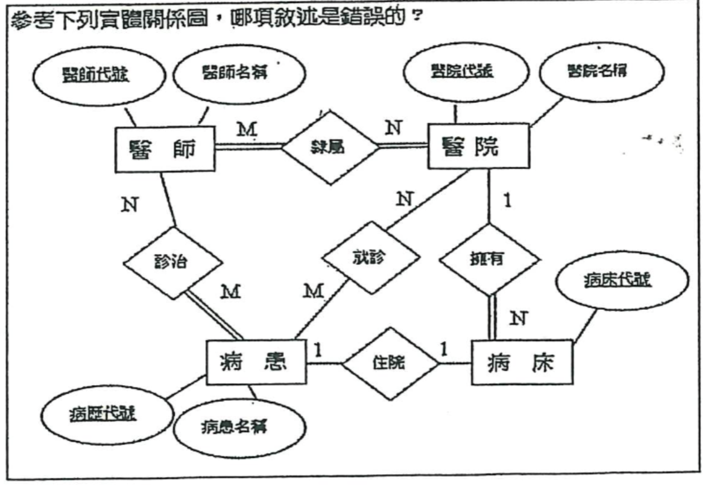
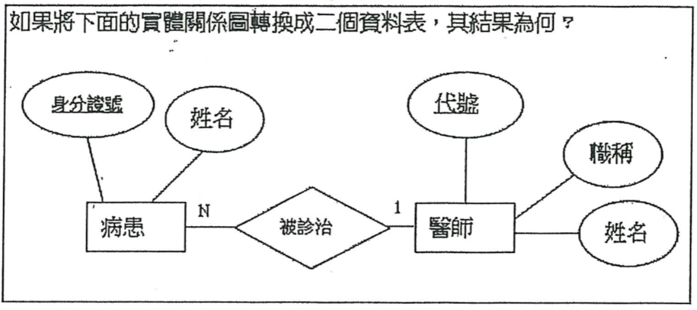
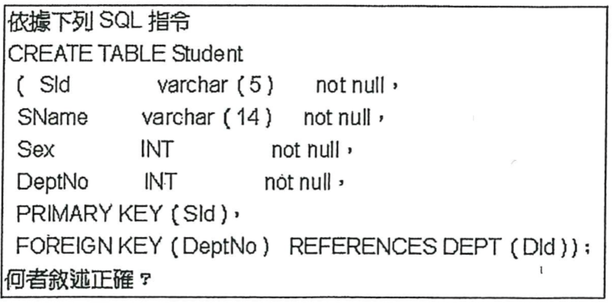
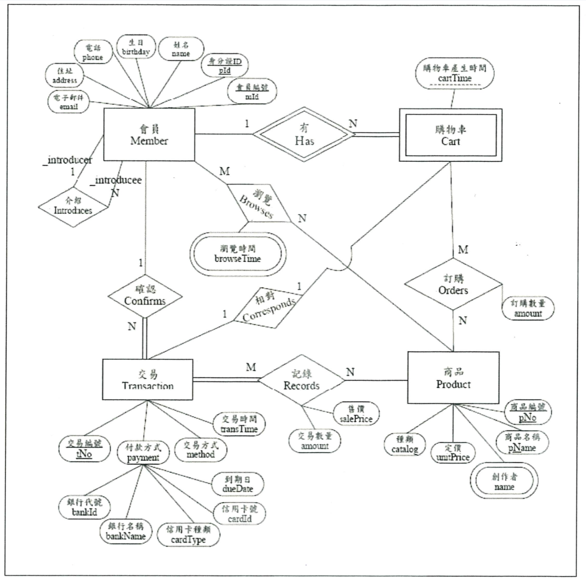
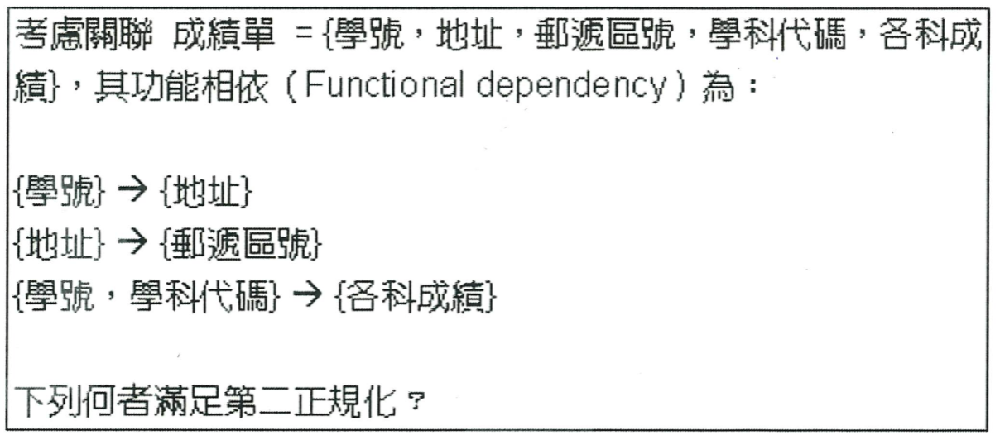

一、 邏輯測驗
基礎題：
- 計程車每輛限乘客 4 名，李家 15 人一同外出，應該租幾輛計計程車？
- 一個大木箱內有 2 個中木箱，每個中木箱有 4 個小木箱，總共幾個木箱？
- 2 頭牛可換 3 隻豬，6 隻豬可換 8 隻羊，40 隻羊可換幾頭牛？
- 請計算出下圖問題

二、 業績表（檔名：考試-excel 業績表）
- 明細頁增加 1 欄總金額、總金額 = 數量 × 單價、總金額要有 "$"，3 位 1 撇、右靠。
- 將營報及店號分開、各自為一欄。
- 日期及門市篩選。
- 產出一張店的每日業績。
- 產出一張 Top sales 前 5 名。
- 產出一張每家店賣最好的商品。
樞紐分析（檔名：樞紐分析-面試）：
呈現結果如桌面上 [樞紐分析結果]。
● 系統分析與設計能力
- 企業希望建立一個 POS 系統，請描述該系統的流程與核心架構。
- 設計一個開發時間表，涵蓋需求說明、架構圖、DFD、開發、測試與上線。
- 規劃一套使用 10 年以上系統如何評估使用的語言與工具，請說明原因？
- 呈上一套 POS 系統上線後，針對企業營運，可以橫向擴充哪些系統發展促進發展增加公司營收？
- 一個跨平台的應用系統，如何確保資料同步和一致性？
● 溝通與問題處理能力
- 遇到內部系統 and 第三方系統整合失敗時，步驟該如何處理？
- 系統在高峰時段用戶連線增高，如何進行「短期調整」與「長期改善」效能優化？
- 如何分配任務以提高團隊效率，並確保交付品質是符合客戶需求？
三、 專業選擇題與問答
1. 在考慮資料庫的需求時,除了使用者的需求外,資料庫的完整、安全等也要考慮。若某公司的總公司在台北,分公司在高雄,最適當的備份機制是哪一種?
- (A) 線上備份(On-line backup)
- (B) 離線備份(Off-line backup)
- (C) 漸近備份(Incremental backup)
- (D) 異地備份(Off-site backup)
2. 請參閱以下作答:
在客戶基本資料表(Customer)使用一段時間後，資料表中已有一大堆客戶資料。這時我們發現為了加快查詢速度，要對電話欄位(tel_no) 建立索引，假設電話欄位只有一個，且電話號碼不會重覆，我們執行SQL指令如下：
CREATE UNIQUE INDEX tel_no_idx ON Customer (tel_no);
下列敘述何者正確?
- (A) 一定可以成功建立索引
- (B) 如果所有客戶都有電話號碼,且號碼不重覆,就可以建立索引

- (C)所有客戶若都有電話號碼,則可以建立索引
- (D)一定無法建立索引
3. 請參閱附圖作答：
參考下列實體關係圖，哪項敘述是錯誤的？
- (A)病患一定有醫師診治
- (B)一位醫師可以隸屬於不同的醫院
- (C)病患一定至某家醫院就診
- (D)醫院不一定會擁有病床
4. 身為一個資料庫管理師(DBA)，要維護資料庫的可用性，經常要做的維護動作，以下敘述何者有誤？
- (A)檢查應用程式，看是否有陷(Bug)出現
- (B)檢查系統日誌(Log file)，看是否有異常狀況發生
- (C)檢查各資料表之資料量的成長狀況，及整體資料庫的磁碟使用空間
- (D)定期查看各資料表之索引(Index)的使用狀況
5. 請參閱附圖作答：
如果將下面的實體關係圖轉換成二個資料表，其結果為何?

- (A)病患(身分證號,姓名)，醫師(代號,職稱,姓名,診治)
- (B)病患(身分證號,姓名)，醫師(代號,職稱,姓名)
- (C)病患(身分證號,姓名,診治)，醫師(代號,職稱,姓名)
- (D)病患(身分證號,姓名,就診)，醫師(代號,職稱,姓名)
6. 請參閱附圖作答：

- (A)資料表 Student 的主鍵(Primary key)是 Sid
- (B) 資料表 Student 的外鍵(Foreign key)是 DeptNo
- (C)Sld 欄位必須要有值
- (D)SName 欄位的值不可重覆
7. 下列敘述何者是不正確的？

- (A)一個會員的介紹人必定也是會員
- (B)一個商品可以有多個創作者
- (C)購物車實體型態不可以單獨存在
- (D)一個交易可以有多種付款方式
8. 在考慮資料庫安全時，可以採取一些實際作為來防止威脅，下列敘述何者不宜？
- (A) 設定資料庫內各物件的存取權限
- (B) 只設定一組管理者(Administrator)帳號密碼
- (C) 執行流程控制(Flow control)
- (D) 啟動日誌功能,記載各使用者的存取記錄
9. 請問下列的SQL 指令是何意義?
GRANT SELECT ON Product TO user4 WITH GRANT OPTION;
- (A)授與 user4 有查詢資料表 Product 的權力，且可將此權限再授與他人
- (B) 授與 user4 有查詢資料表 Product 的權力，但不可將此權限再授與他人
- (C)授與 user4有查詢、更改資料表 Product的權力，且可將此權限再授與他人
- (D)授與 user4 有查詢、更改資料表 Product的權力，但不可將此權限再授與他人
10. 請參閱附圖作答(複選題)

- (A) 成績單1={學號，地址，郵遞區號，學科代碼} ，成績單2={學科代碼，各科成績}
- (B) 成績單1={學號，地址，郵遞區號}，成績單2={學號，學科代碼，各科成績}
- (C) 成績單1={學號，地址}，地址_區號={地址，郵遞區號}，成績單2={學號，學科代碼，各科成績}
- (D) 成績單1={學號，地址，郵遞區號，學科代碼}，地址_區號={地址，郵遞區號}，成績單2={學科代碼，各科成績}
11. 如何在資料量大的資料表內搜尋速度？(語法或調整 Table 方式皆可)
12. 如何在資料庫增強資料防護符合資安法規規範？